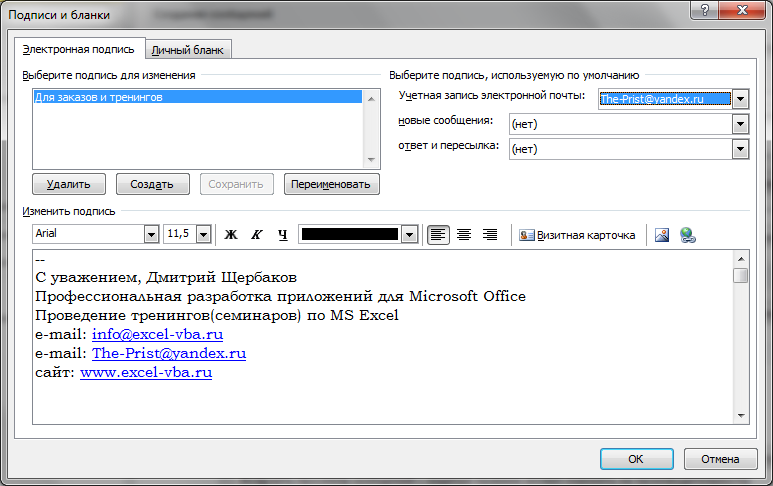
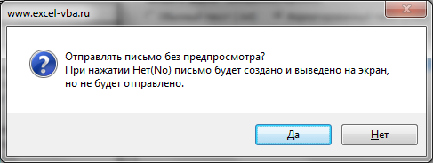

Tips_Macro_CreateMailWithSign.xls (66,5 KiB, 900 скачиваний)
Tips_Macro_CreateMailWithSign.xls (66,5 KiB, 900 скачиваний)Вставить в письмо подпись из Outlook через VBA
Последнее время стал часто встречать вопрос о том, как в письмо, созданное кодом VBA в Excel, добавить стандартную подпись Outlook.
Немного теории для тех, кто не знает как создать и использовать подписи в Outlook. Дело в том, что в Outlook можно создавать несколько подписей и какую-то использовать по умолчанию, а остальные можно вставлять в письмо по необходимости.
Чтобы создать подпись в Excel 2007 и выше необходимо перейти в меню:

В появившемся окне на вкладке Электронная подпись(E-mail Signature) необходимо нажать кнопку Создать(New). Будет предложено ввести имя новой подписи. После чего необходимо подтвердить создание нажатием кнопки ОК и подпись будет добавлена. После добавления необходимо выбрать созданную подпись и добавить текст. Все созданные подписи отображаются в поле Выберите подпись для изменения(Select signature to edit). При выборе любой подписи в нижнем окне Изменить подпись(Edit signature) можно изменить как сам текст подписи и другие параметры: добавить/изменить текст, отформатировать его, вставить гиперссылки, картинки(логотип компании, например) и т.д. Для сохранения изменений необходимо нажать кнопку Сохранить(под верхним окном). Не очень интуитивненько, но как есть.
В этой же вкладке можно настроить использование подписей по умолчанию для выбранной учетной записи(для каждой учетной записи можно назначить свою подпись по умолчанию) - в правой части окна.
Чтобы после создания письма вставить любую из созданных ранее подписей необходимо из окна созданного сообщения перейти на вкладку Вставка(Insert) -Подписи(Signatures) и выбрать нужную подпись.
Как я уже упоминал вначале статьи - из VBA так же можно создавать письма в Outlook. Подробнее об этом можно прочитать в этой статье: Как отправить письмо из Excel?. И вот там как раз есть небольшой недостаток - при создании письма подпись не добавляется автоматом, даже если она создана и настроена для вставки в новые сообщения. Это и побудило меня написать данную статью. Дело в том, что все созданные подписи хранятся на ПК в определенном месте на диске(%AppData%\Microsoft\Signatures\) и до них можно достучаться. Правда, сэмулировать выбор подписи непосредственно из меню не представляется возможным, а вот определить наличие подписей и сделать их вставку можно. Перебрать все созданные подписи можно кодом:
Sub SeeSigns() Dim sSignPath As String Dim sF sSignPath = Environ("appdata") & "\Microsoft\Signatures\" '" sF = Dir(sSignPath & "*.txt") Do While sF <> "" MsgBox sF, vbInformation, "www.excel-vba.ru" sF = Dir Loop End Sub
|
1 2 3 4 5 6 7 8 9 10 |
sSignPath = Environ("appdata") & "\Microsoft\Signatures\" '" |
Этот код просматривает только текстовые подписи - т.е. без оформления в виде картинок и гиперссылок. Однако в самой папке помимо текстовых файлов есть файлы с форматированием в формате .htm. Они добавляются в письма, которые пишутся с применением форматирования, т.е. письма формата .HTML.
Создание письма кодом VBA с выбранной подписью
Чтобы сильно не заморачивать всеми премудростями и хитросплетениями кодинга я просто приложу файл, который умеет создавать письма с подписями, при этом можно выбрать нужную подпись и тип: простой текст или форматированный.
Скачать пример
Tips_Macro_CreateMailWithSign.xls (66,5 KiB, 900 скачиваний)
После скачивания файла прежде чем нажать кнопку Создать письмо в Outlook с подписью надо будет настроить параметры письма в ячейках:

Если планируется отправить письмо с форматированием текста(жирный шрифт, различный цвет шрифта и т.п.) - то надо будет к письму применить теги HTML(ячейка В13). В файле я составил именно такой текст, чтобы был пример подобных писем. При этом для форматированного письма в форме следует выбрать пункт Форматированный текст (.htm). Иначе текст письма будет обычный, но со всеми тегами(ровно так, как он выглядит в самой ячейке на листе). Если форматирование не нужно - то просто записываем текст в ячейку и в форме выбираем Обычный текст (.txt).
После нажатия Ок появится запрос:

Если нажать Нет(No), то письмо будет создано, подпись добавлена, но письмо не будет отправлено, а просто будет выведено на экран, чтобы можно было проверить правильно ли все заполнено и создано. Если нажать Да(Yes), то письмо будет создано и сразу отправлено, без вывода на экран.
Рекомендую сначала пользоваться предпросмотром, чтобы понять как правильно создавать и форматировать письма.
Для тех, кто уже имеет опыт программирования в VBA, полагаю, не составит труда адаптировать код под какие-то свои коды или коды на этом сайте.
Если совсем не охота вдумываться в макросы и нужно готовое решение по рассылке с вложениями и подписями - есть готовое решение: Отправка листа/книги по почте